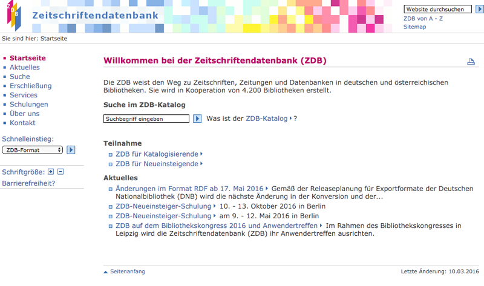
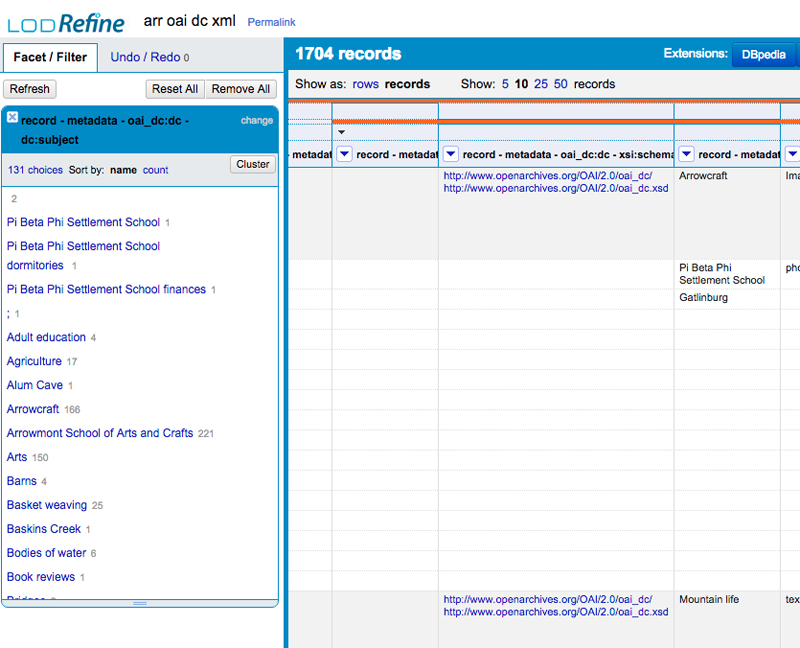
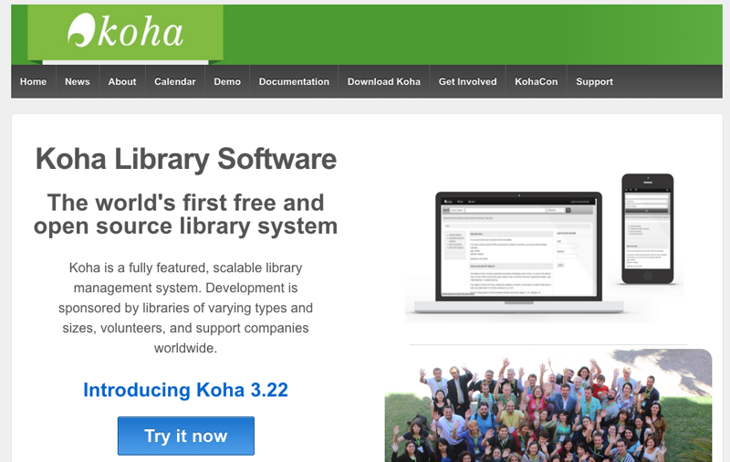
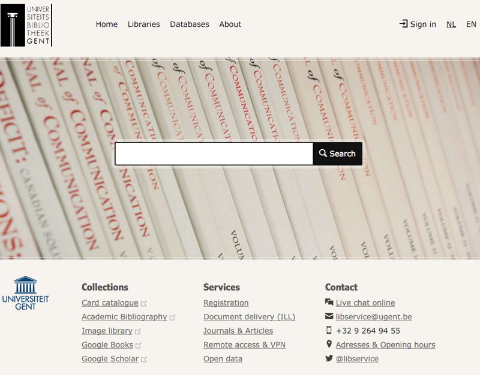

LibreCat applications
LibreCat is an open collaboration of between the universities of Lund, Ghent and Bielefeld to create open source applications for (research) libraries

Biblio - is the academic bibliography and institutional repositoy of Ghent University.
It was build with the LibreCat software created originally by Lund university. The
front-end is created with a Perl Dancer application that uses Catmandu for indexing
and extracting data out of Elasticsearch and MongoDB databases. Catmandu is used to
augment the data with many external datasets.

LibreCat - is a new open source repository system available at GitHub created from the ground up by Bielefeld University using Catmandu tools. Catmandu is used to index and store data in databases such as MongoDB, ElasticSearch and MySQL. The Fix language of catmandu is used for all kind of data cleaning tasks. View a demo of the LibreCat repository at our demo website.

LubStat - is a repository statistics module created by Lund University to generate reports.
Catmandu is used to extract data from the Lund repositories and cleaned with the Fix language.
Other applications

ZDB - is the biggest journal database in Germany ceated by the Staatsbibliothek zu Berlin. The Catmandu project is used to process millions of MAB, MARC and PICA records.

Christina Harlow of UTK used Catmandu to convert MARC to RDF using a combination of Catmandu and LODRefine. Read her full report in the code4lib journal "Data Munging Tools in Preparation for RDF: Catmandu and LODRefine" http://journal.code4lib.org/articles/11013

Koha is working with Catmandu in the new development version of their Library Software to index MARC records in Elasticsearch.

Ghent University library is using Catmandu to index, merge and augment data for their Project Blacklight search engines.